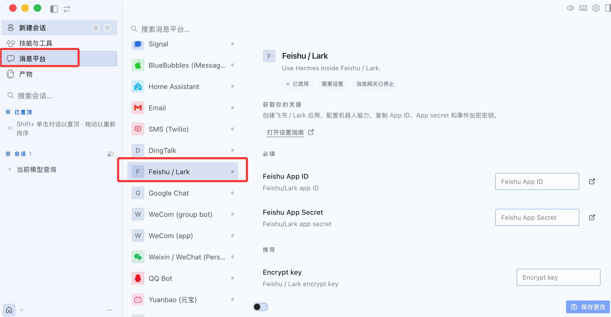

Integración de mensajes de la plataforma Hermes Agent
El gateway de mensajes (Messaging Gateway) permite queel mismo Agente—con la misma memoria, habilidades y herramientas— funcione sin problemas en más de 20 plataformas.
Este capítulo presenta la configuración e implementación de Gateway, el ciclo de vida de las sesiones, las políticas de aislamiento multiusuario y el control de acceso seguro.
Descripción general del gateway de mensajes
El gateway de mensajes es un proceso residente en segundo plano que gestiona de manera unificada las conexiones, sesiones, tareas programadas y entrega de medios de todas las plataformas de mensajería.
Todo lo que le enseñas al Agente en la CLI —memoria, habilidades, preferencias— es completamente consistente en todas las plataformas.
Plataformas compatibles
Hermes soporta más de 20 plataformas de mensajería: CLI, Telegram, Discord, Slack, WhatsApp, Signal, Matrix, Mattermost, Email, SMS, DingTalk, Feishu/Lark, WeCom (WeChat Work), WeChat, QQ, Yuanbao, BlueBubbles (iMessage), Home Assistant, Microsoft Teams, Google Chat, etc.
Comparación de capacidades de plataforma
| Plataforma | Voz | Imágenes | Archivos | Hilos de mensajes | Reacciones con emojis | Indicador de escritura | Salida en streaming |
|---|---|---|---|---|---|---|---|
| Telegram | Sí | Sí | Sí | Sí | — | Sí | Sí |
| Discord | Sí | Sí | Sí | Sí | Sí | Sí | Sí |
| Slack | Sí | Sí | Sí | Sí | Sí | Sí | Sí |
| — | Sí | Sí | — | — | Sí | Sí | |
| Signal | — | Sí | Sí | — | — | Sí | Sí |
| Feishu/Lark | Sí | Sí | Sí | Sí | Sí | Sí | Sí |
| WeCom (WeChat Work) | Sí | Sí | Sí | — | — | — | — |
| DingTalk | — | Sí | Sí | — | Sí | — | Sí |
| Microsoft Teams | — | Sí | — | Sí | — | Sí | — |
| — | Sí | Sí | Sí | — | — | — | |
| SMS | — | — | — | — | — | — | — |
| Matrix | Sí | Sí | Sí | Sí | Sí | Sí | Sí |
Continuidad de sesión multiplataforma: el mismo Agente puede mantener el contexto entre diferentes plataformas. Por ejemplo, si estás conversando con el Agente en Telegram y cambias a Discord, el Agente aún recuerda la conversación anterior.
Arranque y configuración de Gateway
Configuración de la versión de escritorio
Abre la sección de plataformas de mensajería en el menú lateral para ver las plataformas compatibles. Haz clic en la plataforma correspondiente para configurarla:

Configuración en modo interactivo
Utiliza el asistente interactivo para completar la configuración inicial de todas las plataformas:
hermes gateway setup

El asistente te guía a través de la configuración de cada plataforma: seleccionar la plataforma, completar el Bot Token, configurar la lista de usuarios permitidos, etc.
Por ejemplo, si seleccionas Feishu/Lark, puedes elegir escanear un código QR para crear un bot o crearlo mediante APP ID:

Comandos de administración del gateway
Ejemplo
hermes gateway
# Instalar como servicio de sistema a nivel de usuario (Linux systemd / macOS launchd)
hermes gateway install
# Linux: instalar como servicio del sistema que se inicia automáticamente al arrancar
sudo hermes gateway install --system
# Control de servicios
hermes gateway start # Iniciar el servicio
hermes gateway stop # Detener el servicio
hermes gateway restart # Reiniciar el servicio
hermes gateway status # Ver el estado del servicio
Práctica de integración de Telegram Bot
Tomando Telegram como ejemplo, completa un flujo completo de integración de un Bot.
Paso 1: Crear un Telegram Bot.
Busca @BotFather en Telegram, envía el comando /newbot y sigue las indicaciones para configurar el nombre y el nombre de usuario del Bot.
BotFather devolverá un Bot API Token con un formato similar a:1234567890:ABCdefGHIjklMNOpqrsTUVwxyz。
Paso 2: Configurar Hermes Gateway.
Ejemplo
# Configuración de la plataforma Telegram
platforms:
telegram:
enabled: true
bot_token: "1234567890:ABCdefGHIjklMNOpqrsTUVwxyz"
# Opcional: lista de ID de usuario permitidos (modo lista blanca)
allowed_users:
- "123456789"
# Opcional: si es necesario ser mencionado con @ en los grupos para responder
require_mention: true
# Opcional: lista de canales exentos de mención @
free_response_channels:
- "-1001234567890"
Paso 3: Iniciar y probar.
Ejemplo
hermes gateway start
# Envía un mensaje a tu Bot en Telegram para probar
Para la primera integración se recomienda usar el modo lista blanca (allowed_users), permitiendo que solo tu propia cuenta interactúe con el Agente; una vez verificado que todo funciona correctamente, ábrelo a otras personas.
Comandos de barra diagonal disponibles en la plataforma
En cualquier plataforma de mensajería se pueden usar los siguientes comandos:
| Comando | Función |
|---|---|
| /new o /reset | Iniciar una nueva sesión |
| /model [nombre] | Ver o cambiar el modelo |
| /retry | Reintentar el último mensaje |
| /undo | Deshacer la conversación anterior |
| /stop | Interrumpir la tarea actual |
| /approve / /deny | Aprobar/rechazar comandos peligrosos |
| /background <tarea> | Ejecutar una tarea en una sesión en segundo plano |
| /status | Mostrar información de la sesión actual |
| /usage | Mostrar el uso de tokens de esta sesión |
| /voice [on/off/tts] | Controlar las respuestas de voz |
| /compress | Comprimir manualmente el contexto de la conversación |
| /resume [título] | Recuperar una sesión nombrada anteriormente |
| /<skill-name> | Invocar cualquier habilidad instalada |
| /reload-mcp | Recargar los servidores MCP |
| /update | Actualizar Hermes a la última versión |
| /help | Mostrar todos los comandos disponibles |
Ciclo de vida de la sesión
Session es el concepto central para gestionar conversaciones en Hermes Gateway.
Comprender cómo funciona Session te ayuda a configurar políticas adecuadas de aislamiento de sesiones y reglas de reinicio.
SessionSource: descriptor del origen del mensaje
Cada mensaje que llega al Gateway lleva asociado un SessionSource, que registra «de dónde viene» este mensaje.
| Campo | Tipo | Descripción |
|---|---|---|
| platform | string | Nombre de la plataforma (telegram, discord, slack, etc.) |
| chat_id | string | Identificador de sesión (ID de chat privado, ID de grupo, ID de canal) |
| chat_type | string | Tipo de sesión: dm (chat privado), group (grupo), channel (canal), thread (hilo) |
| user_id | string | ID de plataforma del remitente del mensaje |
| user_name | string | Nombre para mostrar del remitente del mensaje |
| thread_id | string | ID de tema del foro (foro de Telegram) / ID de hilo de Discord |
| guild_id | string | ID de servidor de Discord (para aislamiento de servidores) |
Reglas de generación de Session Key
Session Key es una cadena determinista compuesta por los campos en SessionSource.
Determina qué mensajes pertenecen a la misma sesión, con el siguiente formato:
agent:main:{platform}:{chat_type}:{chat_id}:{thread_id}:{user_id}
Ejemplos de Session Key en diferentes escenarios:
| Escenario | Session Key |
|---|---|
| Chat privado de Telegram | agent:main:telegram:dm:12345 |
| Grupo de Telegram | agent:main:telegram:group:-10012345:user_abc |
| Tema de foro de Telegram | agent:main:telegram:group:-10012345:thread_678:user_abc |
| Chat privado de Discord | agent:main:discord:dm:12345 |
| Canal de servidor de Discord | agent:main:discord:channel:12345:user_abc |
| Hilo de Discord | agent:main:discord:thread:12345:thread_678 |
Las reglas de generación de Session Key son una de las configuraciones más importantes de la puerta de enlace. Si se configuran incorrectamente, pueden causar que las sesiones de diferentes usuarios se 'crucen': dos personas diferentes pueden ver el contenido de la conversación del otro.
SessionEntry: registro de sesión activa
Cada Session Key corresponde a un SessionEntry, que registra los metadatos y el estado de la sesión.
| Campo | Descripción |
|---|---|
| session_id | Identificador único de sesión, formato: YYYYMMDD_HHMMSS_hex aleatorio de 8 dígitos |
| created_at | Hora de creación de la sesión |
| updated_at | Última hora de actividad (para determinar el tiempo de espera por inactividad) |
| total_tokens | Consumo acumulado de tokens |
| estimated_cost_usd | Costo acumulado estimado (USD) |
| suspended | Si está suspendido forzosamente (comando /stop o bucle anómalo) |
| resume_pending | Si está esperando recuperación (marca de recuperación después de un reinicio por caída) |
Política de aislamiento multiusuario
El aislamiento multiusuario determina si múltiples usuarios en el mismo grupo o canal comparten una sesión o son independientes.
Esta configuración afecta directamente la experiencia del usuario: una sesión compartida significa que el usuario A puede ver el contexto de la conversación del usuario B.
Configuración de la política de aislamiento
| Elemento de configuración | Valor predeterminado | Significado |
|---|---|---|
| group_sessions_per_user | true | Cada usuario en un grupo/canal tiene una sesión independiente |
| thread_sessions_per_user | false | Todos los usuarios en un hilo comparten la misma sesión |
Comportamiento en diferentes escenarios
| Escenario | Comportamiento predeterminado | Descripción |
|---|---|---|
| Chat privado (DM) | Siempre independiente | El chat privado siempre es privado, no configurable |
| Grupo/Canal | Sesión independiente por usuario | El usuario A y el usuario B tienen contextos de sesión independientes en el mismo grupo |
| Hilo (tema de foro) | Todos los usuarios comparten la sesión | En los temas de foro de Telegram y los hilos de Discord, todos los participantes comparten el mismo contexto |
Cambios en el mensaje de sistema en sesiones compartidas
Cuando la sesión está en modo compartido (shared_multi_user_session = true), el mensaje del sistema cambia:
- Ya no se fija un nombre de usuario, sino que se indica 'sesión multiusuario: el prefijo del mensaje contiene el nombre del remitente'
- Cada mensaje de usuario se prefija con el nombre para mostrar del remitente para que el Agente sepa quién está hablando
- Este diseño mantiene la validez de la caché del mensaje (el mensaje del sistema no cambia según el remitente)
La política de aislamiento predeterminada (por usuario en grupos, compartida en hilos) es una mejor práctica validada por amplia experiencia. No se recomienda modificarla a menos que existan necesidades especiales.
Configuración de seguridad del gateway
Control de acceso de usuarios
De forma predeterminada, la puerta de enlace rechaza a todos los usuarios que no estén en la lista blanca: es la configuración de seguridad predeterminada para los bots con acceso al terminal.
Configurar los usuarios permitidos (en el archivo .env):
Ejemplo
# Lista blanca de usuarios para plataformas específicas
TELEGRAM_ALLOWED_USERS=123456789,987654321
DISCORD_ALLOWED_USERS=123456789012345678
SLACK_ALLOWED_USERS=U012AB3CD,U012EF4GH
FEISHU_ALLOWED_USERS=ou_xxxxxxxx,ou_yyyyyyyy
WECOM_ALLOWED_USERS=user-id-1,user-id-2
TEAMS_ALLOWED_USERS=aad-object-id-1
# Lista blanca que aplica a todas las plataformas
GATEWAY_ALLOWED_USERS=123456789,987654321
# Permitir a todos los usuarios (no recomendado para bots con acceso al terminal)
GATEWAY_ALLOW_ALL_USERS=true
Emparejamiento DM (alternativa a la lista blanca)
No es necesario configurar manualmente el ID de usuario: cuando un nuevo usuario envía un mensaje privado al Bot, recibe un código de emparejamiento de un solo uso:
Ejemplo
# Tú apruebas el acceso de ese usuario
hermes pairing approve telegram XKGH5N7P
# Ver la lista de usuarios pendientes y aprobados
hermes pairing list
# Revocar el acceso de un usuario
hermes pairing revoke telegram 123456789
El código de emparejamiento caduca después de 1 hora, tiene límite de frecuencia y se genera con números aleatorios criptográficos.
Token de silencio
Se usa en chats grupales, Hooks y flujos automatizados para que el Agente no envíe ningún mensaje bajo ciertas condiciones:
# Agent 回复中仅包含以下内容之一时，网关不会向平台发送任何消息： [SILENT] SILENT NO_REPLY NO REPLY
El silencio es unadecisión de entrega, no afecta el registro de la sesión: la respuesta aún se almacena en el historial de la conversación, lo que garantiza el correcto funcionamiento de la lógica de alternancia del diálogo.
Política de reinicio de sesión
Configura cuándo se restablece automáticamente la sesión para evitar el crecimiento infinito del contexto:
Ejemplo
"reset_by_platform": {
"telegram": { "mode": "idle", "idle_minutes": 240 },
"discord": { "mode": "idle", "idle_minutes": 60 },
"slack": { "mode": "daily", "reset_hour": 4 }
}
}
| Estrategia | Valor predeterminado | Descripción |
|---|---|---|
| daily | 4 a. m. | Restablece la sesión en un momento específico del día |
| idle | 1440 minutos | Restablece la sesión después de un tiempo de inactividad |
| both | Combinación | Se restablece lo que se active primero |
Referencia rápida de comandos comunes
Ejemplo
hermes gateway setup # Configuración interactiva de plataforma
hermes gateway # Ejecución en primer plano (depuración)
hermes gateway install # Instalar como servicio de usuario
hermes gateway start / stop / restart # Control de servicios
hermes gateway status # Ver el estado del servicio
# ─── Emparejamiento de usuarios ────────────────────────────────────────────────
hermes pairing list # Ver la lista de emparejamientos
hermes pairing approve <platform> <code> # Aprobar emparejamiento
hermes pairing revoke <platform> <user_id> # Revocar acceso
# ─── Comandos de barra dentro de la sesión ──────────────────────────────────────────
/new # Iniciar nueva sesión
/model [Nombre] # Ver o cambiar el modelo
/retry # Reintentar el último mensaje
/undo # Deshacer la ronda de conversación anterior
/stop # Interrumpir la tarea actual
/approve / /deny # Aprobar/rechazar comandos peligrosos
/background <Tarea> # Tarea en segundo plano
/status # Información de la sesión actual
/usage # Uso de tokens
/voice [on/off/tts] # Control de voz
/compress # Comprimir contexto
/resume [Título] # Reanudar sesión
/<skill-name> # Invocar habilidad
/reload-mcp # Recargar MCP
/update # Actualizar Hermes
/help # Todos los comandos
Haz clic para compartir notas
<p style="font-size:14px;">¡La nota debe ser una extensión del contenido de este artículo!</p><br> <p style="font-size:12px;"><a href="../tougao.html" target="_blank">Envía un artículo, haz clic aquí</a></p> <p style="font-size:14px;"><a href="../w3cnote/runoob-user-test-intro.html" target="_blank">Cómo obtener el código de invitación de registro</a></p> <h3 class="text-muted"><i class="fa fa-info-circle" aria-hidden="true"></i> Antes de compartir una nota, debes <a href=";.html" class="runoob-pop">iniciar sesión</a>!</h3> <p><a href="../w3cnote/runoob-user-test-intro.html" target="_blank">Cómo obtener el código de invitación de registro</a></p>